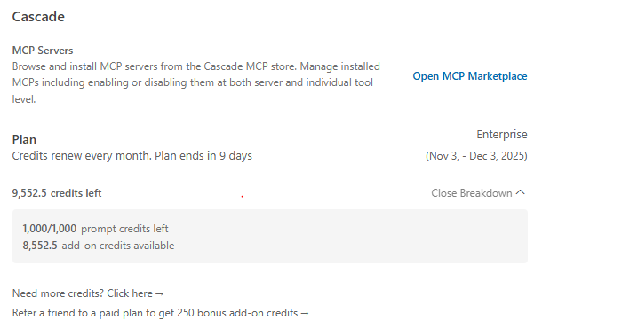

<!DOCTYPE html>
<html lang="en">
  <head>
    <meta charset="UTF-8" />
    <meta name="viewport" content="width=device-width, initial-scale=1.0" />
    <title>AI Workflow Playbook</title>
    <link rel="preconnect" href="https://fonts.googleapis.com" />
    <link rel="preconnect" href="https://fonts.gstatic.com" crossorigin />
    <link
      href="https://fonts.googleapis.com/css2?family=Inter:wght@400;500;600;700&display=swap"
      rel="stylesheet"
    />
    <link rel="stylesheet" href="styles.css" />
  </head>
  <body>
    <div class="layout">
      <aside class="sidebar" aria-label="Section navigation">
        <div class="brand">
          <span class="emoji" aria-hidden="true">🧭</span>
          <div>
            <p class="brand-label">AI Workflow Playbook</p>
            <p class="brand-subtitle">Notes from the journey</p>
          </div>
        </div>
        <nav class="toc" aria-label="Table of contents">
          <ul>
            <li><a href="#getting-started">Getting Started with AI Assistants</a></li>
            <li><a href="#credit-management">Viewing Cascade credits inside Windsurf Settings</a></li>
            <li><a href="#model-selection">Selecting the Right Model</a></li>
            <li><a href="#prompt-design">Crafting Effective Prompts</a></li>
            <li><a href="#rules-mcp">Rules & MCP Usage</a></li>
          </ul>
        </nav>
      </aside>

      <main class="content">
        <header class="intro">
          <h1>Learning to work with AI pair programmers</h1>
          <p>
            This site captures hands-on lessons for beginners exploring Windsurf, Cascade,
            and other AI copilots.
          </p>
        </header>

        <section id="getting-started" class="content-section">
          <div class="section-header">
            <h2>Getting Started with AI Assistants</h2>
            <span class="tag">Foundations</span>
          </div>
          <p class="section-summary">
            Document the basics of onboarding to Windsurf and Cascade, including account
            setup, first prompts, and early wins.
          </p>
          <div class="content-placeholder has-content" role="group" aria-label="Getting started content">
            <div class="subsection">
              <h3>Using the Windsurf IDE with Cascade</h3>
              <p>
                Windsurf provides the project workspace where files live, while Cascade extends
                that workspace with conversational problem-solving. Understanding how the two
                layers interact keeps your AI teammate aligned with the code you are actively
                shaping.
              </p>

              <div class="subsection-grid" role="group" aria-label="Windsurf and Cascade overview">
                <article class="info-card" role="article">
                  <h4>Working inside the Windsurf workspace</h4>
                  <p>
                    Each Windsurf project maps to a folder on disk. The IDE mirrors your
                    repository tree, tracks open editors, and highlights file changes in real
                    time.
                  </p>
                  <ul>
                    <li>Keep related experiments in the same workspace so context stays local.</li>
                    <li>
                      Use the file explorer to stage what Cascade should reference—open files are
                      prioritized when the assistant composes responses.
                    </li>
                  </ul>
                </article>

                <article class="info-card" role="article">
                  <h4>Collaborating with the Cascade assistant</h4>
                  <p>
                    Cascade conversations sit alongside the workspace. Each thread retains the
                    code, diffs, and rules you surface during the session, so you can iterate
                    without repeating setup steps.
                  </p>
                  <ul>
                    <li>Start a fresh thread per feature or bug to keep histories focused.</li>
                    <li>
                      Share current files or snippets explicitly when switching tasks to refresh
                      Cascade’s context window.
                    </li>
                  </ul>
                </article>
              </div>

              <div class="relationship-callout" role="note">
                <h4>How the workspace and conversations connect</h4>
                <p>
                  Cascade can answer general questions from the internet or its own knowledge,
                  but its code-aware help is grounded in the Windsurf workspace you have open.
                  Keeping that mapping clear helps avoid mixing context between projects.
                </p>
                <ol>
                  <li>
                    Open the correct folder in Windsurf before asking Cascade about code. Its
                    structured file access is scoped to the current project path, not your whole
                    machine.
                  </li>
                  <li>
                    When you want edits, anchor prompts to specific files or snippets that are
                    open or recently edited so Cascade can propose precise diffs instead of
                    guessing where changes belong.
                  </li>
                  <li>
                    When you switch repositories, open a new Windsurf workspace and start a fresh
                    Cascade conversation. This keeps each thread focused and prevents historical
                    context from one project leaking into another.
                  </li>
                </ol>
                <div class="tip-callout" role="note">
                  <p>
                    <strong>Tip:</strong> Ask Cascade general questions (for example, about Git or
                    AI concepts) in any conversation, but when you want it to change code, mention
                    the specific file or snippet in your open workspace so that its proposals line
                    up with your repository layout.
                  </p>
                </div>
              </div>

              <div class="subsection lifecycle-subsection" aria-label="Project and conversation life cycles">
                <h3>Project Life Cycle vs Conversation Life Cycle</h3>
                <p>
                  A project often lives for months or years, but an individual Cascade conversation
                  is usually scoped to a narrower slice of that work&mdash;a feature, a bug, or a short
                  learning goal. Treat conversations as chapters inside the longer story of your
                  project.
                </p>

                <div class="subsection-grid" role="group" aria-label="Lifecycle comparisons">
                  <article class="info-card" role="article">
                    <h4>Long-lived projects</h4>
                    <p>
                      Your Windsurf workspace can stay open for the entire life of a repository
                      (weeks or months). Files, history, and tooling evolve, but the project
                      identity stays the same.
                    </p>
                    <ul>
                      <li>
                        Think of the project as the stable home for your code, tests, and
                        documentation across many releases.
                      </li>
                      <li>
                        Expect to reopen the same workspace repeatedly as you maintain and extend
                        the system.
                      </li>
                    </ul>
                  </article>

                  <article class="info-card" role="article">
                    <h4>Shorter-lived conversations</h4>
                    <p>
                      Cascade conversations are best kept focused. A single thread might follow
                      one feature, bug fix, or experiment over a few hours or days.
                    </p>
                    <ul>
                      <li>
                        Reuse a conversation while you are actively iterating on the same story,
                        so Cascade remembers previous context and decisions.
                      </li>
                      <li>
                        Retire a conversation when its goal is complete or the topic has drifted
                        far from its original purpose.
                      </li>
                    </ul>
                  </article>
                </div>

                <div class="relationship-callout lifecycle-guidance" role="note">
                  <h4>When to start a new conversation</h4>
                  <ol>
                    <li>
                      <strong>New feature or story:</strong> When you begin work on a distinct
                      feature or user story (for example, "add search to the knowledge base"),
                      create a dedicated conversation so its history mirrors that task.
                    </li>
                    <li>
                      <strong>Context reset:</strong> If a thread has become long and meandering,
                      or you have switched to an unrelated area of the codebase, start a fresh
                      conversation with a short summary of where the project stands.
                    </li>
                    <li>
                      <strong>Long-running maintenance:</strong> Over months of supporting the
                      same project, expect to open many conversationsfor incidents, refactors,
                      and experimentswhile keeping the same Windsurf workspace.
                    </li>
                    <li>
                      <strong>Short, intense bursts:</strong> If you are focused on a single bug or
                      story for a few days, it is usually helpful to keep one conversation open for
                      that entire burst so Cascade can build up a rich, task-specific memory.
                    </li>
                  </ol>
                </div>
              </div>
            </div>
          </div>
        </section>

        <section id="credit-management" class="content-section">
          <div class="section-header">
            <h2>Viewing Cascade credits inside Windsurf Settings</h2>
            <span class="tag tag-warning">Budget</span>
          </div>
          <p class="section-summary">
            Learn how to read Cascade's Plan information inside Windsurf so you can understand
            personal versus shared credits and when your allocation renews.
          </p>
          <div class="content-placeholder has-content" role="group" aria-label="Credit management content">
            <div class="subsection">
              <p>
                When you use Cascade from within Windsurf, your available AI credit usage is summarized in
                the <strong>Plan</strong> portion of the Cascade section. Open the Windsurf settings (gear icon) and navigate to the Cascade section
                to see how many credits you have left in total, how many
                personal prompt credits remain, how many shared add-on credits are available, and
                when your current plan period ends.
              </p>
              <figure class="screenshot-figure">
                
                <figcaption>
                  Example of the Cascade <strong>Plan</strong> panel in Windsurf, showing total
                  credits left along with separate personal prompt credits and shared add-on
                  credits.
                </figcaption>
              </figure>

              <div class="subsection-grid" role="group" aria-label="Cascade plan breakdown">
                <article class="info-card" role="article">
                  <h4>Understanding the Plan breakdown</h4>
                  <p>
                    A typical Plan section might show something like:
                  </p>
                  <ul>
                    <li><strong>9,552.5 credits left</strong> &mdash; headline total currently available.</li>
                    <li>
                      <strong>1,000 / 1,000 prompt credits left</strong> &mdash; your personal
                      Cascade allocation for this billing period, with the numerator showing what
                      you have left and the denominator showing the full allowance.
                    </li>
                    <li>
                      <strong>8,552.5 add-on credits available</strong> &mdash; a shared pool of
                      credits your organization has purchased for all eligible users.
                    </li>
                  </ul>
                  <p>
                    In this example, your personal bucket is full, and there is also a sizeable
                    enterprise pool that everyone can draw from when allowed.
                  </p>
                </article>

                <article class="info-card" role="article">
                  <h4>Personal vs enterprise credits</h4>
                  <p>
                    It helps to separate credits into two buckets when you are planning your work
                    in Windsurf:
                  </p>
                  <ul>
                    <li>
                      <strong>Personal prompt credits</strong> are tied to your individual account
                      and typically reset on a fixed schedule. Use these for day-to-day coding
                      help, learning, and exploratory work.
                    </li>
                    <li>
                      <strong>Add-on (enterprise) credits</strong> belong to your organization and
                      are shared across many users. Teams often reserve this pool for
                      higher-priority efforts such as client deliverables, production incidents,
                      or critical internal initiatives.
                    </li>
                  </ul>
                  <p>
                    When your personal credits reach zero, any continued usage may start to draw
                    from the enterprise pool, depending on how your organization has configured
                    access.
                  </p>
                </article>
              </div>
            </div>
          </div>
        </section>

        <section id="model-selection" class="content-section">
          <div class="section-header">
            <h2>Selecting the Right Model</h2>
            <span class="tag tag-info">Decision Support</span>
          </div>
          <p class="section-summary">
            Provide guidance on matching model capabilities to tasks, weighing cost versus
            quality, and navigating free versus paid options.
          </p>
          <div class="content-placeholder has-content" role="group" aria-label="Model selection content">
            <div class="subsection">
              <h3>Understanding model families</h3>
              <p>
                The model picker in Cascade may list several <em>model series</em> side by sidefor
                example, GPT models from OpenAI, Claude models from Anthropic, and Sonnet or other
                vendor-specific lines. Each series is trained by a different provider, but you can
                think of them as offering similar tiers:
              </p>
              <ul>
                <li>
                  <strong>General models</strong> for everyday conversation, explanation, and light
                  coding help.
                </li>
                <li>
                  <strong>Reasoning models</strong> for harder problems that need multi-step logic,
                  tradeoff analysis, or careful planning.
                </li>
                <li>
                  <strong>Code-oriented models</strong> tuned for reading and writing code,
                  refactors, and test generation.
                </li>
                <li>
                  <strong>"Mini" or fast models</strong> that are cheaper and lower-latency, best
                  for simple or repetitive tasks.
                </li>
              </ul>

              <div class="subsection-grid" role="group" aria-label="Model option examples">
                <article class="info-card" role="article">
                  <h4>Interpreting model names</h4>
                  <p>
                    Model names often combine a base line with hints about their strengths. For
                    example names like these follow common patterns:
                  </p>
                  <ul>
                    <li>
                      <strong>GPT-5 (high reasoning)</strong> &mdash; same core family as other
                      GPT-5 models, but configured to spend more compute on deep reasoning and
                      planning. Good for tricky bugs, architecture reviews, and complex analysis.
                    </li>
                    <li>
                      <strong>GPT-5 (low reasoning)</strong> &mdash; optimized for speed and lower
                      cost. Best for straightforward questions, simple refactors, or quick
                      clarifications.
                    </li>
                    <li>
                      <strong>GPT-5-Codex</strong> &mdash; a variant tuned specifically for code.
                      Prefer this when your prompt is mostly code, tests, or refactoring requests
                      in a supported language.
                    </li>
                    <li>
                      <strong>GPT-5.1-Codex-Mini</strong> &mdash; a smaller, faster code model. A
                      good default for iterative development where you want low latency and are
                      comfortable reviewing and correcting the results.
                    </li>
                  </ul>
                  <p>
                    Other series such as Claude or Sonnet follow similar ideas: larger versions for
                    quality and reasoning, smaller ones for speed and cost, and special variants
                    focused on code or other tasks.
                  </p>
                </article>

                <article class="info-card" role="article">
                  <h4>Using cost and labels to choose</h4>
                  <p>
                    Each model entry also includes a <strong>cost indicator</strong> such as
                    <code>Free</code>, <code>0.5x</code>, <code>1x</code>, <code>2x</code>, or
                    <code>3x</code>. This tells you how many credits that model uses relative to a
                    baseline model:
                  </p>
                  <ul>
                    <li><strong>Free</strong> &mdash; does not consume paid credits while free usage is available.</li>
                    <li><strong>0.5x</strong> &mdash; about half the cost of a 1x baseline model for the same prompt size.</li>
                    <li><strong>2x, 3x</strong> &mdash; two or three times the baseline cost, in exchange for higher quality, better reasoning, or both.</li>
                  </ul>
                  <p>
                    A simple rule of thumb for beginners is:
                  </p>
                  <ul>
                    <li>
                      Start with a <strong>1x general or code model</strong> for most work.
                    </li>
                    <li>
                      Drop to a <strong>0.5x or mini</strong> option for quick, low-stakes
                      questions when you want to conserve credits.
                    </li>
                    <li>
                      Switch to a <strong>2x or 3x reasoning model</strong> when you are stuck on a
                      difficult problem and expect better reasoning to save you more time than the
                      extra credits cost.
                    </li>
                  </ul>
                </article>
              </div>

              <div class="relationship-callout lifecycle-guidance" role="note">
                <h4>Switching models within one conversation</h4>
                <p>
                  You are not locked into a single model for the life of a conversation. In most
                  Cascade workflows, the model you pick in the dropdown applies to the next
                  message, while the conversation history remains the same.
                </p>
                <ol>
                  <li>
                    Use a <strong>cheaper or mini model</strong> early on to explore the problem,
                    gather context, and try quick ideas.
                  </li>
                  <li>
                    When you reach a hard question or a critical decision, switch to a
                    <strong>higher reasoning</strong> or <strong>larger code model</strong> for a
                    few key prompts.
                  </li>
                  <li>
                    After the heavy lifting is done, you can return to a faster model for follow-up
                    questions and small tweaks, without starting a new conversation.
                  </li>
                </ol>
              </div>
            </div>
          </div>
        </section>

        <section id="prompt-design" class="content-section">
          <div class="section-header">
            <h2>Crafting Effective Prompts</h2>
            <span class="tag tag-success">Techniques</span>
          </div>
          <p class="section-summary">
            Share prompt templates, iterative refinement examples, and principles for
            communicating goals to AI teammates.
          </p>
          <div class="content-placeholder" role="group" aria-label="Prompt design content">
            <!-- TODO: Showcase prompt anatomy, iteration logs, and reusable templates. -->
          </div>
        </section>

        <section id="rules-mcp" class="content-section">
          <div class="section-header">
            <h2>Rules & MCP Usage</h2>
            <span class="tag tag-neutral">Governance</span>
          </div>
          <p class="section-summary">
            Explain how to configure rules and leverage MCPs to align AI behavior with your
            workflow preferences.
          </p>
          <div class="content-placeholder" role="group" aria-label="Rules and MCP content">
            <!-- TODO: Add diagrams, configuration snippets, and operational checklists. -->
          </div>
        </section>

      </main>
    </div>
  </body>
</html>
